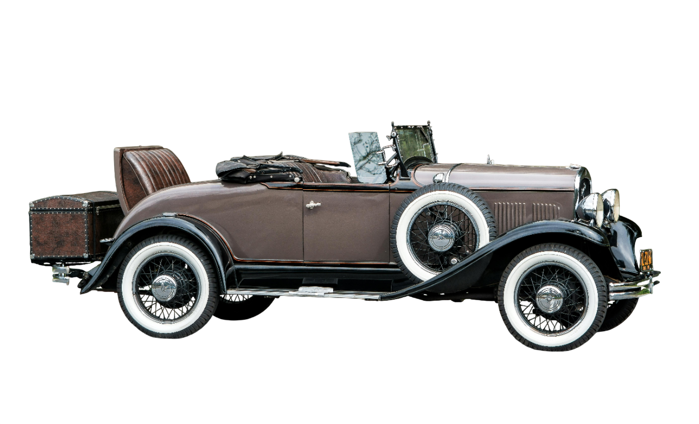

car animation using js

<!DOCTYPE html>
<html lang="en">
<head>
    <meta charset="UTF-8">
    <meta name="viewport" content="width=device-width, initial-scale=1.0">
    <title>Document</title>
    <style>
body {
  background: #111;
  color: white;
  font-family: Arial;
  text-align: center;
}

/* Road */
.road {
  width: 100%;
  height: 200px;
  border: 3px solid #444;
  margin: 20px auto;
  position: relative;
  overflow: hidden;
  background: #222;
}

/* Car */
#car {
  position: absolute;
  left: 0;
  bottom: 20px;
  width: 300px;
}

/* Bounce animation (yellow) */
@keyframes bounce {
  0% { transform: translateY(0); }
  50% { transform: translateY(-8px); }
  100% { transform: translateY(0); }
}

.bounce {
  animation: bounce 0.4s ease-in-out infinite;
}

/* Traffic light */
.traffic-light {
  width: 70px;
  background: #000;
  padding: 10px;
  border-radius: 10px;
  margin: auto;
}

.light {
  width: 45px;
  height: 45px;
  background: #333;
  border-radius: 50%;
  margin: 10px auto;
}

.red.active { background: red; }
.yellow.active { background: yellow; }
.green.active { background: lime; }

button {
  margin-top: 15px;
  padding: 8px 16px;
  cursor: pointer;
}

    </style>
</head>
<body>
   <div class="scene">
  <div class="road">
    
  </div>

  <div class="traffic-light">
    <div class="light red"></div>
    <div class="light yellow"></div>
    <div class="light green"></div>
  </div>
</div>

<button onclick="startTraffic()">Start Traffic</button>

<script>
const car = document.getElementById("car");
const road = document.querySelector(".road");

const lights = {
  red: document.querySelector(".red"),
  yellow: document.querySelector(".yellow"),
  green: document.querySelector(".green")
};

let position = 0;
let moving = false;
let maxPosition = 0;

/* Reset traffic lights */
function resetLights() {
  Object.values(lights).forEach(light =>
    light.classList.remove("active")
  );
}

/* 🔴 Red Light */
function redLight() {
  resetLights();
  lights.red.classList.add("active");
  moving = false;
  car.classList.remove("bounce");
}

/* 🟡 Yellow Light (engine start bounce) */
function yellowLight() {
  resetLights();
  lights.yellow.classList.add("active");
  car.classList.add("bounce");
}

/* 🟢 Green Light (move car) */
function greenLight() {
  resetLights();
  lights.green.classList.add("active");
  car.classList.remove("bounce");
  moving = true;

  // calculate how far the car can go
  maxPosition = road.clientWidth - car.clientWidth;
  moveCar();
}

/* Car movement */
function moveCar() {
  if (!moving) return;

  position += 3; // speed

  if (position >= maxPosition) {
    position = maxPosition;
    moving = false; // stop at end
  }

  car.style.left = position + "px";

  if (moving) {
    requestAnimationFrame(moveCar);
  }
}

/* Start traffic sequence */
function startTraffic() {
  position = 0;
  car.style.left = "0px";

  redLight();
  setTimeout(yellowLight, 2000);
  setTimeout(greenLight, 4000);
}
</script>


</body>
</html>